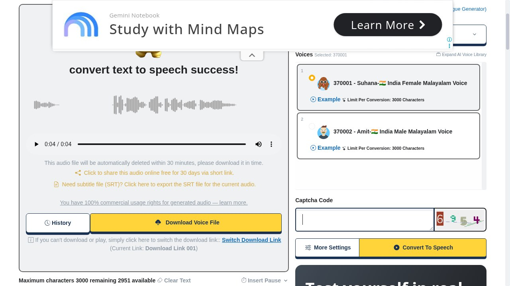

TTSMaker: free text to speech in Malayalam, Hindi and 77 more languages
Paste text, pick a voice, download the audio. TTSMaker’s free tier does AI text to speech in 79 languages including Malayalam, with no sign-up and a free commercial-use license. Here is what the official pages confirm and what our hands-on Malayalam test found.
Quick facts
- Free tier: AI text to speech in the browser, no sign-up, works on phone and desktop.
- 79 languages, including Malayalam, Hindi, Tamil, Telugu, Kannada, Bengali, Marathi, Gujarati, Punjabi, Urdu, Assamese and Odia.
- Free allowance of 20,000 characters a week, and some voices are marked unlimited.
- Download the result as an audio file, share it with a 30-day link, or export SRT subtitles.
- Commercial use of the generated audio is allowed free under TTSMaker's published license terms.
Type, pick a voice, download
TTSMaker is a text-to-speech website with a genuinely usable free tier. Paste or type your text, choose a language and a voice, press "Convert To Speech", and a few seconds later you get a playable result with a download button. On the free tier there is no account, no app to install and no payment step.
Each voice shows its per-conversion character limit before you start, and a counter shows how many characters you have left. A "More Settings" panel and an "Insert Pause" option sit below the text box for finer control.
Our test: Malayalam in, MP3 out

We pasted a Malayalam sentence, picked "Suhana", an India female Malayalam voice, and completed the free-tier checks: a short captcha plus a one-time "verify you're human" step the first time. The conversion finished in seconds and produced a playable MP3 (the file URL ended in .mp3 and played in the page). The result page also offered a download button, a share link that stays live for 30 days, and an SRT subtitle export.
Two practical notes from the test. Generated files are automatically deleted after 30 minutes, so download promptly. And the free tier shows advertising: we saw a banner popup and an interstitial during the session.
Free limits, captcha and the paid option
The free tier allows 20,000 characters a week, and some voices carry an "unlimited" tag. Free conversions require a captcha each time, after the one-time human verification. An optional paid "Pro" upgrade removes ads and captchas and adds features such as emotion adjustment, according to the site. The free tier is genuinely usable on its own, which is why TTSMaker earns its place here; the site also sells an optional Pro plan.
Commercial use and privacy
TTSMaker's published commercial license terms state that users get a non-exclusive, irrevocable, worldwide and perpetual license to use the audio they generate, for personal and commercial purposes such as videos, audiobooks and advertisements, without extra fees. The same page states that audio files and download links are stored for up to 30 minutes and then deleted, and that input text is not retained beyond that window.
The privacy policy states that the service collects usage data and cookies. These are the provider's own published terms; we did not audit TTSMaker's servers or network, so treat the retention statements as the company's policy rather than an independent verification.
Why it matters for Indian users
Free TTS tools usually treat Indian languages as an afterthought. TTSMaker's voice library covers 79 languages and includes named India voices for Malayalam (Suhana, Amit), Hindi, Tamil, Telugu, Kannada, Bengali, Marathi, Gujarati, Punjabi, Urdu, Assamese and Odia, which makes it practical for voiceovers, study notes read aloud, accessibility and quick drafts for YouTube or class projects. It worked in our browser test with no sign-up; the site also warns that VPNs or ad-blockers can interfere with its verification step.
Sources checked 22 October 2026: the TTSMaker homepage and live voice library, our own conversion test, and TTSMaker's published privacy policy and commercial license terms, linked below.